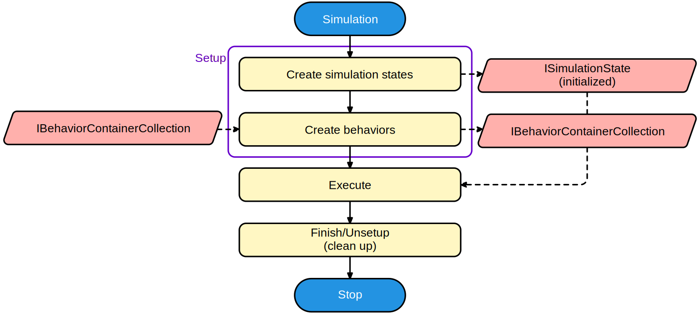

Spice# Flow
The main structure of Spice# revolves around entities, behaviors, simulations and their simulation states.

When running a simulation, that simulation will create the necessary simulation states, and ask for each entity in the entity collection to create behaviors for the simulation (the entity can add its behaviors to the simulation's IEntityBehaviorCollection). These behaviors define methods that can be called by the simulation when needed.
Behaviors implement specific parts of the simulation algorithm and are also specific to the entity being modeled. For example, a Transient simulation requires several types of behaviors that a component might need to implement. The behaviors would then implement one or more of these interfaces:
- An ITemperatureBehavior that describes a method that tells the behavior that the temperature might have changed. The entity should recalculate anything that might have changed.
- An IBiasingBehavior that contains methods that are called each iteration in order to build up the Y-matrix and right-hand side vector.
- An IConvergenceBehavior that allows some influence over deciding whether or not a new iteration should be computed.
- An ITimeBehavior that gets called when it's okay to make time-dependent states that can be integrated.
Once all behaviors have been created by all entities, the simulation no longer has a need for entities, and will continue to work with just the created behaviors.
Entities
An entity implements the IEntity interface. The main job of the entity is to create behaviors for simulations, at which point they are allowed to search for other entities that they are linked to (like a mutual inductance that searches for its inductors, or a component/instance that searches for its model). Each entity also has a name and can contain parameters.
In all Spice-based simulators the distinction is made between instances and models. Both are considered entities in Spice#, however the instance entity will ask the simulation for the behaviors created by the model entity, by using the model entity's name. This prompts the simulation to first ask the model entity for behaviors. An instance entity in Spice# has been implemented through the IComponent interface.
Parameters and properties
Entities can contain one or more IParameterSet's that can be used by behaviors. They are usually simple classes with properties that contain information that needs to be passed down to the behaviors, like the resistance of a resistor or DC voltage of a voltage source, but they can just as well be used to describe anything. These parameters can be set directly by accessing the entity's members or, when implemented, they can also be set using their Spice "name". The name of a parameter is nothing more than a shorthand notation used by most Spice simulators to identify the parameter.
For example, the parameters of a resistor are defined in Parameters.
| Property name | Names | Description | Remarks |
|---|---|---|---|
Resistance |
resistance or r |
Resistance (ohms) | If not specified, the model is used to determine the resistance. |
TemperatureCelsius |
temp |
Instance operating temperature (degrees Celsius) | |
Width |
w |
Width (m) | Optional parameter that is only used if a model is specified. |
Length |
l |
Length (m) | Optional parameter that is only used if a model is specified. |
ParallelMultiplier |
m |
Number of resistors in parallel | |
SeriesMultiplier |
n |
Number of resistors in series |
It is possible to set the resistance of the resistor simply by using any of the following methods:
// Set resistance straight from the constructor to 1kOhm
var resistor = new Resistor("R1", "a", "b", 1e3);
// Set resistance using the property directly to 2kOhm
resistor.Parameters.Resistance = 2.0e3;
// Set resistance using the name of the parameter using its Spice name
// Note: if you use 3e3 instead of 3.0e3, then this method will try to find
// a parameter of type "int" so make sure to specify a double!
resistor.Parameters.SetParameter("r", 3.0e3);
Entity collections
Entities can be grouped into collections using IEntityCollection. The name of each entity should be uniquely defined within that collection. The most used implementation of such a collection is Circuit.
Simulations
Simulations will manipulate behaviors in a way that is useful for modeling reality, like doing a transient simulation. In order for behaviors to work together, they can all gain access to shared simulation states. A simulation state can contain the current iteration solution's node voltages and branch currents for biasing simulations, but just as well the noise quantities for noise simulations, or the integration method used by a transient simulation.
Behaviors
Once behaviors are created, they should be self-sufficient. This means that any properties that you wish to be able to retrieve (even those defined in the entity) will need to be referenced or redefined in the behavior.
Simulation states
Simulation states are usually just classes that are only exposed through some interface that implements ISimulationState. They can come in many forms, but the most common one will probably be the IBiasingSimulationState. This simulation state contains the Y-matrix and right-hand side vector needed to iterate to a solution of the whole circuit.
Code in behaviors should be written in a way that is compatible with the simulation. Unforunately this takes some knowledge, but to help you along you can follow the section about custom components.